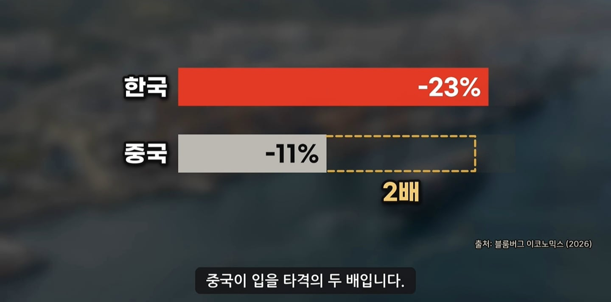

양안터지면 리얼 ㅈ된다
전쟁 당사국보다 피해규모가 훨씬큼 ㅋㅋㅋㅋ
지정학 리스크 ㅅㅂ 옆에 인간 아닌 무언가가 있어서
사고치면 우리가 젤 큰 피해입음

양안터지면 리얼 ㅈ된다
전쟁 당사국보다 피해규모가 훨씬큼 ㅋㅋㅋㅋ
지정학 리스크 ㅅㅂ 옆에 인간 아닌 무언가가 있어서
사고치면 우리가 젤 큰 피해입음
별거 있나 저 지경 까지 갔으면 그냥 미국이 해달라는거 해줘야지
양안전쟁의 전제조건이 북한의 남한 국지도발or남침으로 미8함대랑 국군 어그로 맥이고 시작하는거라던데
지금 중국 해군 전력 증강 속도와 질적인 면은 1도련선 내라면 미국과 대등, 약소 우위를 가져갈 정도가 됨. 물론 일본 자위대와 호주, 한국 참전시 이야기가 달라지지만 참전 국가들의 해군 역시 무사하기 힘듦. 2030년대가 되면 1도련선 내에서는 거의 우위 상황임.
샨사땜 좀 얻어 맞으면 지도에서 수도 다 지워질 병신들이 개깝치네
양안?? 뭔지 잘모르겠지만 눈치상 중국 ㅡ 대만전쟁인가
일어나게되면 동아시아 뿐만아니라 세계질서가 크게 바뀔건데 한국이 참전을 하니마니 하는 현실성없는 소리 하고있는 우물 안 저능아들 보면 ㅋㅋㅋ
HOW THE ARMY FIGHTS
이거 검색해서 읽어보면 잼씀